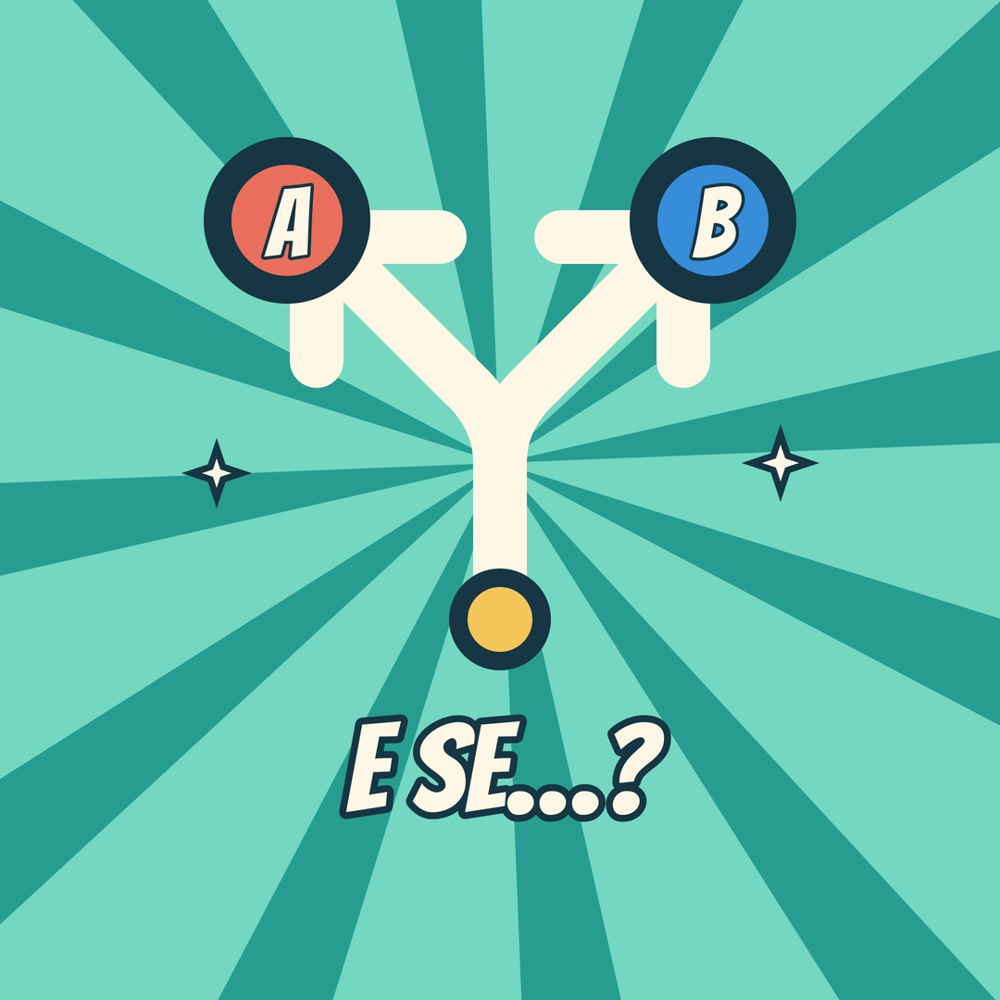
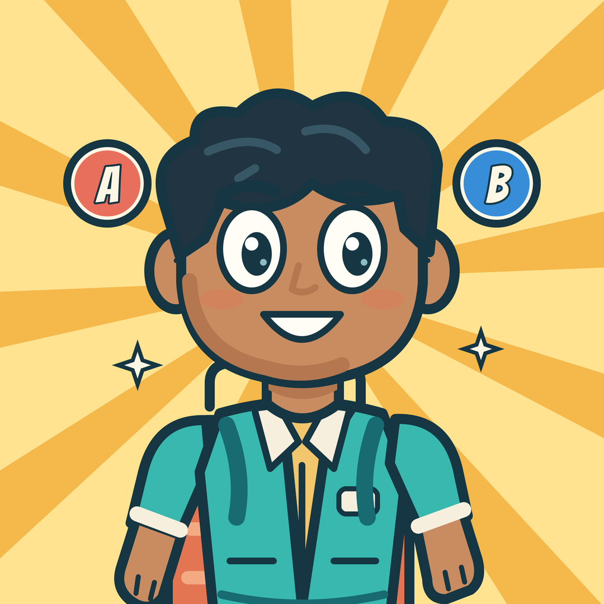
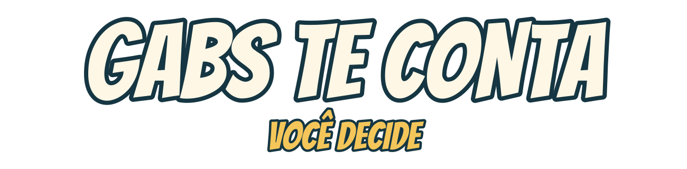
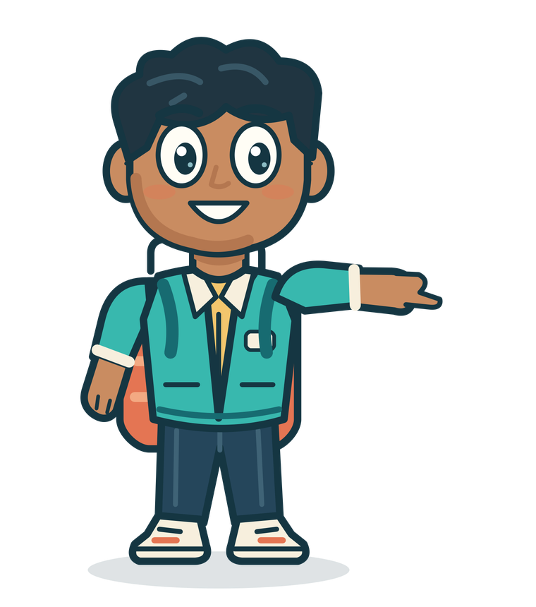

E se…?
Veja uma continuação imaginada para a opção que não venceu a votação.


Minha vida inspira esta série. Você vota A ou B e escolhe a continuidade do personagem. No Clube Gabs te conta, acompanha o outro caminho.
A história e a votação são abertas. O apoio é opcional.

Um personagem, um problema e duas escolhas. Assista a este piloto para conhecer o formato.
Piloto fictício de teste. Este vídeo demonstra o formato; não é um relato da vida do criador.
Acompanhar os episódios nas redes
Veja uma continuação imaginada para a opção que não venceu a votação.
Bastidores, calendário dos bônus e o processo por trás das histórias.
O maior apoio confirmado de cada episódio recebe destaque, com autorização para aparecer.
O valor é livre. Qualquer apoio confirmado libera o canal privado Gabs te conta — E se…?, sem cobrança recorrente.
Cada bônus tem o prazo informado antes do apoio. Não há voto extra: todo mundo participa da história principal.
Qualquer valor confirmado
Entrada no canal privado. Liberação manual em até 24 horas após conferência e identificação.
Estamos finalizando o Pix, o formulário de acesso e as metas do projeto para idosos. Recebedor, orçamento, período e prazos serão publicados antes da abertura.
Confira o recebedor no banco. Depois, envie seu comprovante pelo formulário na seção de acesso.
A entrada será simples, com conferência de verdade.
Escolhe o valor e faz o Pix quando os apoios forem abertos.
Preenche o Google Forms com nome, e-mail e comprovante. Pode deixar uma mensagem para o projeto.
Conferimos o crédito no banco e enviamos o convite por e-mail, em até 24 horas após confirmação e identificação.
O Google Forms de acesso está em configuração. O botão aparecerá aqui quando o formulário e o contato do projeto estiverem confirmados.
Enviar comprovanteO formulário pedirá nome usado no Pix, e-mail para receber o convite, comprovante e uma mensagem opcional. O Google exige login para anexar arquivos. O comprovante será conferido com o crédito no banco.
Meu sonho é criar um projeto de acolhimento a pessoas idosas em situação de vulnerabilidade, em homenagem ao meu pai. Dos apoios confirmados, metade será reservada à estruturação desse projeto e metade manterá a série.
Projeto em fase de criação: ainda não há fundação constituída nem atendimento em funcionamento. Metas, orçamento, período da campanha e data de prestação de contas serão publicados antes de abrir o Pix.
Não. Assistir, comentar A ou B e acompanhar a história principal é aberto a todos. Apoiar não muda o peso do seu voto.
Os caminhos alternativos, bastidores e o calendário dos bônus. As continuações alternativas são possibilidades imaginadas, não provas de que o público acertou ou errou na vida real.
50% dos apoios brutos confirmados, excluídos os estornos, serão reservados ao planejamento e à estruturação do projeto para idosos. Os outros 50% mantêm a série e cobrem tarifas, ferramentas e produção.
Os demonstrativos mostrarão o período, total confirmado, reserva do projeto social, despesas realizadas e saldo reservado, com comprovantes e dados pessoais ocultos. Reservar recursos para estruturar o projeto não equivale a já prestar atendimento a idosos. O caixa do personagem pertence ao enredo.
A votação A/B escolhe o caminho. Cada curtida nos quatro vídeos oficiais do episódio soma 1 moeda fictícia ao caixa do personagem, até 300 moedas novas por episódio, somando Instagram, TikTok, YouTube e Kwai. O saldo pode pagar despesas estabelecidas na continuação imaginada, como o transporte para treinar, e a consequência aparece no próximo capítulo.
As moedas são um recurso da ficção: não equivalem a Pix, doação ou dinheiro disponível para saque. O próximo capítulo mostrará a apuração, o crédito e o uso do saldo. Sugestões nos comentários também podem inspirar cenas, por escolha editorial.
Votação, curtidas e ranking encerram em 10/11/2026, às 19h de Brasília. Somamos os resultados dos quatro vídeos oficiais. Vale uma escolha A/B por perfil em cada rede; se o perfil mudar de ideia, vale sua última escolha clara dentro do prazo.
Em empate A/B, anunciamos nas quatro redes uma rodada de desempate de 2 horas no Instagram, separada da contagem de moedas e apoios. Se ainda empatar, o empate e a decisão editorial serão explicados. As contagens ainda não foram realizadas.
Somamos os apoios de cada pessoa confirmados no banco durante o período do episódio, excluindo estornos, duplicidades e pagamentos de teste identificados. O maior total recebe agradecimento no próximo vídeo e um Story salvo no destaque Clube, identificado pelo episódio. Se houver empate, todos os empatados recebem o mesmo reconhecimento.
Publicamos nome ou @ somente com autorização específica. Os valores individuais e os comprovantes ficam privados por padrão. O apoio não aumenta o peso do voto A/B nem gera moedas para o personagem.
No EP01, o ranking fecha em 10/11/2026, às 19h de Brasília. Ainda não há resultado divulgado.
Não. O Google Forms recebe o pedido e o comprovante. Depois de conferir o crédito no banco, enviamos o convite privado ao e-mail informado. Enviar o formulário não confirma o pagamento automaticamente.
Configurando os perfis oficiais.